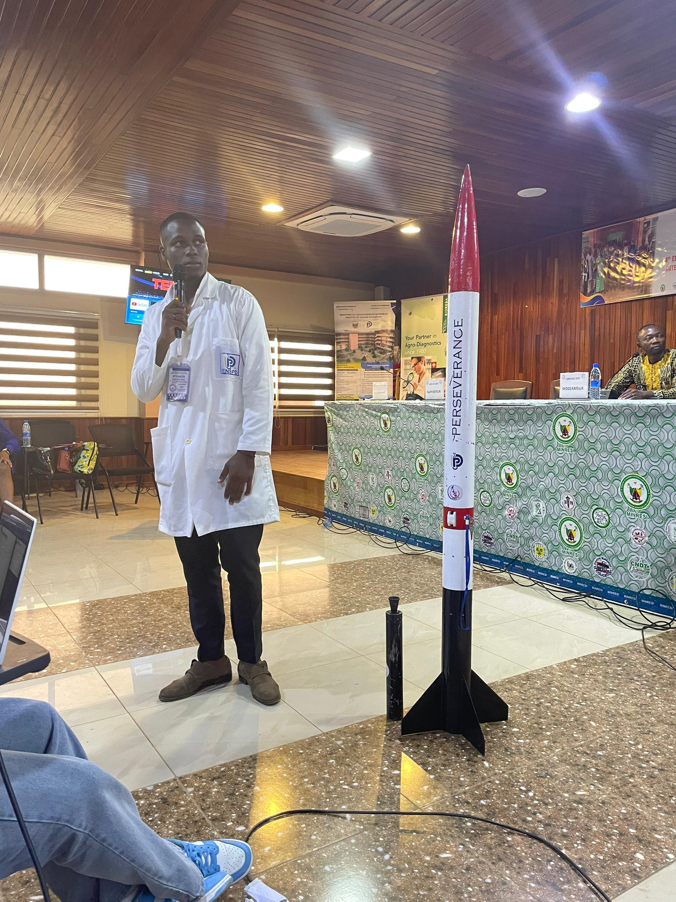

From concept to maiden flight.
Every milestone is tangible proof. Achieved accomplishments, active engineering, and long-term objectives — always clearly distinguished.
Foundation of NOVA SPACE
Inception of NOVA SPACE in Douala, Cameroon, by engineering students from the École Nationale Supérieure Polytechnique de Douala (ENSPD). Initiation of baseline aerospace R&D programs focused on accessible space technology.

SKY RAIDER Propulsion Demonstrator
Development and static bench testing of SKY RAIDER, NOVA SPACE's first experimental propulsion demonstrator. Validated combustion mechanics, chamber thermal tolerance, and nozzle geometry fundamentals.
PERSEVERANCE — Rocket Architecture
Complete design and engineering of our flagship suborbital prototype: custom liquid propulsion unit, lightweight composite fuselage, integrated launch rail guides, and real-time sensor avionics.

Academic Partnership with ENSPD
Signature of a collaborative framework with the École Nationale Supérieure Polytechnique de Douala. Granted university laboratory access, engineering peer reviews, and institutional support from university director Pr R. M. MOUANGUE.
Industrial Partnership with Air Liquide
Strategic industrial supply agreement with Air Liquide, providing certified industrial gases, pressurants, and purge agents critical for rocket engine tests and launch pad operations.
PERSEVERANCE Maiden Flight (≈ 1 km)
Historic flight of Cameroon's first experimental rocket, reaching approximately 1,000 meters in altitude. The launch verified aerodynamic stability, live radio telemetry downlink, and engine ignition sequence under field conditions.

JERSIC 2025 — First Prize
NOVA SPACE received first prize at JERSIC 2025, organized by MINRESI. The photograph shows the project pitch presented at the event.

ICT Week 2026 — 6th Place Award
National technology recognition at ICT Week 2026, ranking 6th among premier Cameroonian innovation initiatives for groundbreaking aerospace and electronics engineering.

COMORAN Electric Demonstrator
Engineering and physical assembly of our electric flight demonstrator, currently at 75% completion. Focuses on electro-mechanical guidance, digital bus architecture, and high-efficiency avionics. Never presented as a finished system until full test completion.


COMORAN Finalization & Field Testing
Complete system integration and comprehensive flight tests for the electric demonstrator platform to certify avionics stability in harsh dynamic conditions.
CAMAROES Reusability Demonstrator
Development of a dedicated reusability demonstrator to explore controlled return trajectories and recovery mechanisms. An essential experimental step forward, not a commercial service.
Orbital Launcher Capability
The ultimate technological destination of NOVA SPACE: delivering sovereign orbital launch capability for African small satellites, designed, assembled, and launched from Cameroon.